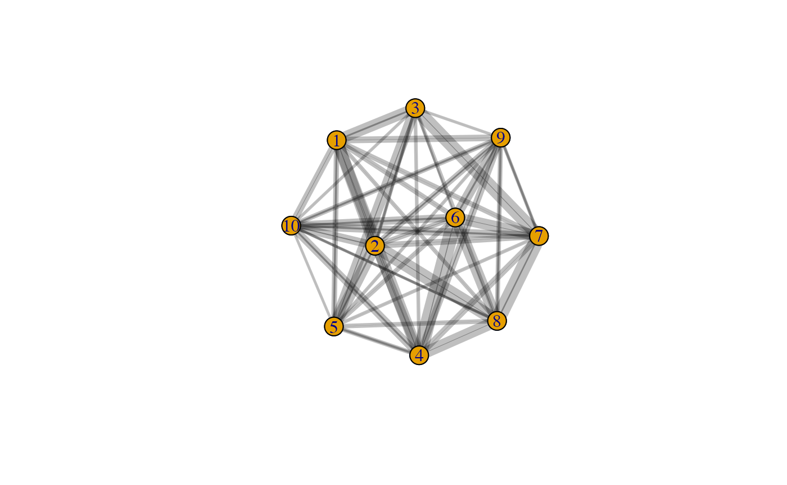
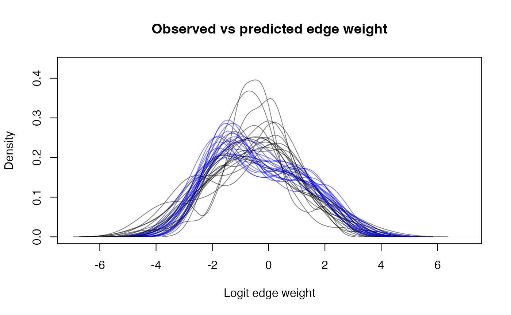

Edge Models
library(bisonR)
#> Loading required package: cmdstanr
#> This is cmdstanr version 0.5.2
#> - CmdStanR documentation and vignettes: mc-stan.org/cmdstanr
#> - CmdStan path: /Users/jordan/.cmdstan/cmdstan-2.29.2
#> - CmdStan version: 2.29.2
#> Loading required package: igraph
#>
#> Attaching package: 'igraph'
#> The following objects are masked from 'package:stats':
#>
#> decompose, spectrum
#> The following object is masked from 'package:base':
#>
#> union
library(dplyr)
#>
#> Attaching package: 'dplyr'
#> The following objects are masked from 'package:igraph':
#>
#> as_data_frame, groups, union
#> The following objects are masked from 'package:stats':
#>
#> filter, lag
#> The following objects are masked from 'package:base':
#>
#> intersect, setdiff, setequal, union
sim_data <- simulate_edge_model("binary", aggregated=F)
df <- sim_data
head(df)
#> event node_1_id node_2_id age_diff location duration
#> 1 0 1 2 -3.554920 4 1
#> 2 0 1 2 -3.554920 1 1
#> 3 0 1 2 -3.554920 2 1
#> 4 1 1 3 4.346781 4 1
#> 5 1 1 3 4.346781 5 1
#> 6 1 1 3 4.346781 1 1
priors <- get_default_priors("binary")
priors
#> $fixed
#> [1] "normal(0, 1)"
#>
#> $random_mean
#> [1] "normal(0, 1)"
#>
#> $random_std
#> [1] "half-normal(1)"
priors$fixed <- "normal(0, 1)"
priors
#> $fixed
#> [1] "normal(0, 1)"
#>
#> $random_mean
#> [1] "normal(0, 1)"
#>
#> $random_std
#> [1] "half-normal(1)"
fit_edge <- edge_model((event | duration) ~ dyad(node_1_id, node_2_id), data=df, data_type="binary", priors=priors)
#> Running MCMC with 4 parallel chains...
#>
#> Chain 1 finished in 0.5 seconds.
#> Chain 2 finished in 0.5 seconds.
#> Chain 3 finished in 0.5 seconds.
#> Chain 4 finished in 0.5 seconds.
#>
#> All 4 chains finished successfully.
#> Mean chain execution time: 0.5 seconds.
#> Total execution time: 0.7 seconds.
plot_trace(fit_edge)
summary(fit_edge) # 0.810 -0.051 1.740
#> === Fitted BISoN edge model ===
#> Data type: binary
#> Formula: (event | duration) ~ dyad(node_1_id, node_2_id)
#> Number of nodes: 10
#> Number of dyads: 45
#> Directed: FALSE
#> === Edge list summary ===
#> median 5% 95%
#> 1 <-> 2 -0.917 -2.281 0.378
#> 1 <-> 3 0.911 -0.337 2.212
#> 2 <-> 3 1.942 0.997 3.016
#> 1 <-> 4 -0.915 -2.282 0.348
#> 2 <-> 4 -0.824 -1.857 0.147
#> 3 <-> 4 -1.972 -3.088 -0.991
#> 1 <-> 5 1.057 0.303 1.872
#> 2 <-> 5 0.885 -0.396 2.226
#> 3 <-> 5 -0.413 -1.506 0.648
#> 4 <-> 5 1.825 0.810 2.978
#> 1 <-> 6 -1.691 -2.871 -0.682
#> 2 <-> 6 -1.062 -1.889 -0.327
#> 3 <-> 6 -2.185 -3.262 -1.288
#> 4 <-> 6 -0.401 -1.947 1.073
#> 5 <-> 6 -1.757 -2.876 -0.742
#> 1 <-> 7 -1.709 -2.877 -0.659
#> 2 <-> 7 -1.524 -2.732 -0.496
#> 3 <-> 7 -0.687 -2.105 0.676
#> 4 <-> 7 -1.450 -2.652 -0.423
#> 5 <-> 7 -1.934 -3.046 -0.993
#> 6 <-> 7 -0.912 -2.241 0.336
#> 1 <-> 8 -1.880 -3.010 -0.893
#> 2 <-> 8 -0.715 -2.168 0.724
#> 3 <-> 8 -1.936 -3.070 -0.951
#> 4 <-> 8 -0.919 -2.278 0.406
#> 5 <-> 8 -1.744 -2.910 -0.787
#> 6 <-> 8 -0.901 -2.273 0.372
#> 7 <-> 8 0.406 -1.080 1.896
#> 1 <-> 9 -1.280 -2.351 -0.321
#> 2 <-> 9 0.517 -0.145 1.238
#> 3 <-> 9 -2.066 -3.128 -1.117
#> 4 <-> 9 -0.185 -0.918 0.521
#> 5 <-> 9 -1.997 -3.078 -1.034
#> 6 <-> 9 1.087 -0.136 2.382
#> 7 <-> 9 1.985 1.028 3.114
#> 8 <-> 9 1.748 0.751 2.885
#> 1 <-> 10 -1.012 -1.994 -0.138
#> 2 <-> 10 0.004 -0.816 0.845
#> 3 <-> 10 -2.074 -3.171 -1.104
#> 4 <-> 10 1.090 0.108 2.167
#> 5 <-> 10 -2.091 -3.176 -1.170
#> 6 <-> 10 1.310 0.197 2.514
#> 7 <-> 10 1.338 0.195 2.600
#> 8 <-> 10 2.077 1.098 3.149
#> 9 <-> 10 1.227 0.455 2.085
plot_network(fit_edge, lwd=2)
plot_predictions(fit_edge, num_draws=20)
Dyadic Regression
Dyadic regression is also useful:
priors <- get_default_priors("dyadic_regression")
priors$error <- "half-normal(2.5)"
df_dyadic <- df %>%
distinct(node_1_id, node_2_id, age_diff)
fit_dyadic <- dyadic_regression(dyad(node_1_id, node_2_id) ~ age_diff, fit_edge, df_dyadic, mm=TRUE, priors=priors)
#> Running MCMC with 4 parallel chains...
#>
#> Chain 1 Iteration: 1 / 2000 [ 0%] (Warmup)
#> Chain 2 Iteration: 1 / 2000 [ 0%] (Warmup)
#> Chain 3 Iteration: 1 / 2000 [ 0%] (Warmup)
#> Chain 4 Iteration: 1 / 2000 [ 0%] (Warmup)
#> Chain 2 Iteration: 500 / 2000 [ 25%] (Warmup)
#> Chain 4 Iteration: 500 / 2000 [ 25%] (Warmup)
#> Chain 1 Iteration: 500 / 2000 [ 25%] (Warmup)
#> Chain 3 Iteration: 500 / 2000 [ 25%] (Warmup)
#> Chain 2 Iteration: 1000 / 2000 [ 50%] (Warmup)
#> Chain 2 Iteration: 1001 / 2000 [ 50%] (Sampling)
#> Chain 4 Iteration: 1000 / 2000 [ 50%] (Warmup)
#> Chain 4 Iteration: 1001 / 2000 [ 50%] (Sampling)
#> Chain 1 Iteration: 1000 / 2000 [ 50%] (Warmup)
#> Chain 1 Iteration: 1001 / 2000 [ 50%] (Sampling)
#> Chain 3 Iteration: 1000 / 2000 [ 50%] (Warmup)
#> Chain 3 Iteration: 1001 / 2000 [ 50%] (Sampling)
#> Chain 2 Iteration: 1500 / 2000 [ 75%] (Sampling)
#> Chain 4 Iteration: 1500 / 2000 [ 75%] (Sampling)
#> Chain 1 Iteration: 1500 / 2000 [ 75%] (Sampling)
#> Chain 3 Iteration: 1500 / 2000 [ 75%] (Sampling)
#> Chain 2 Iteration: 2000 / 2000 [100%] (Sampling)
#> Chain 2 finished in 1.6 seconds.
#> Chain 4 Iteration: 2000 / 2000 [100%] (Sampling)
#> Chain 4 finished in 1.7 seconds.
#> Chain 3 Iteration: 2000 / 2000 [100%] (Sampling)
#> Chain 3 finished in 1.8 seconds.
#> Chain 1 Iteration: 2000 / 2000 [100%] (Sampling)
#> Chain 1 finished in 1.9 seconds.
#>
#> All 4 chains finished successfully.
#> Mean chain execution time: 1.7 seconds.
#> Total execution time: 2.0 seconds.
#> Warning: 13 of 4000 (0.0%) transitions ended with a divergence.
#> See https://mc-stan.org/misc/warnings for details.
summary(fit_dyadic)
#> === Fitted dyadic regression model ===
#> Formula: ~
#> Number of dyads: 45
#> === Coefficient summary === === Fitted dyadic regression model ===
#> Formula: dyad(node_1_id, node_2_id)
#> Number of dyads: 45
#> === Coefficient summary === === Fitted dyadic regression model ===
#> Formula: age_diff
#> Number of dyads: 45
#> === Coefficient summary ===
#> variable 50% 5% 95%
#> intercept -0.127 -0.361 0.131
#> fixed_age_diff 0.198 0.167 0.229
plot_trace(fit_dyadic)
plot_predictions(fit_dyadic, num_draws=20)
# get_contrasts(fit_dyadic, "fixed_dyad_typeLifeform-Lifeform", "fixed_dyad_typeDroid-Droid")